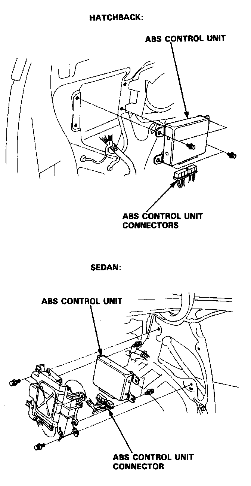

Electronic Brake Control Module: Service and Repair

ABS Control Unit Replacement
1. Remove the right quarter trim panel (hatchback) or trunk side panel (sedan).
2. Disconnect the ABS control unit connectors.
3. Remove the ABS control unit mounting bolts, then remove the control unit.
4. Install the ABS control unit in the reverse order of removal.